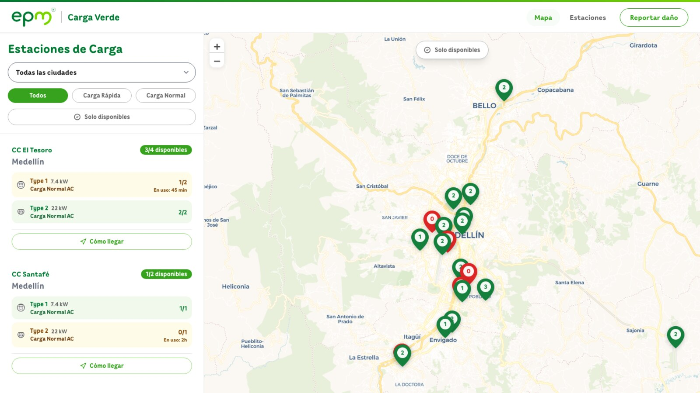
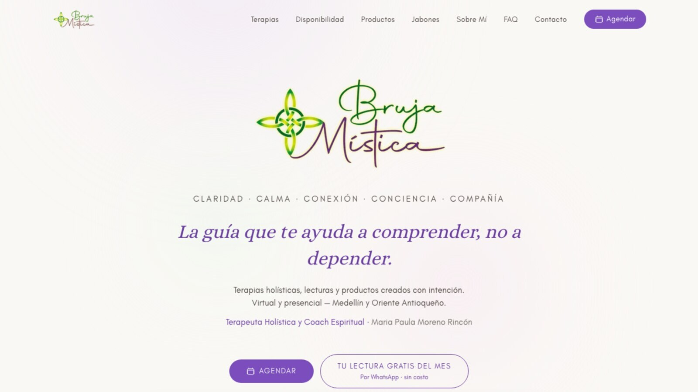
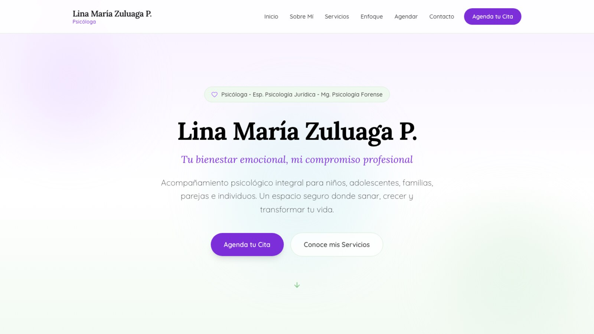
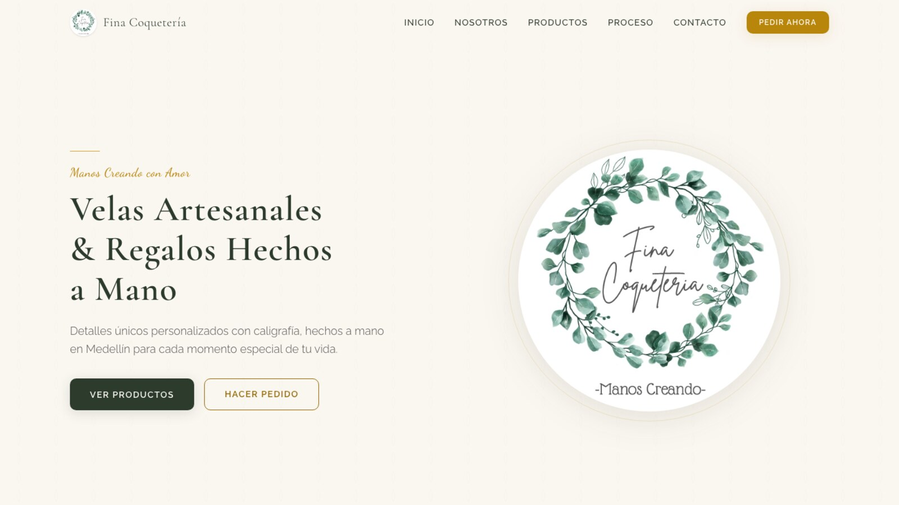

Senior Product Designer & Lead
Juan David
Colorado Vargas
I design AI-powered enterprise products that ship. Now leading design at Symplast; previously UX lead for Nvidia’s $2B+ supply-chain AI platform.
10+ years bridging design and engineering: validated interfaces, shipped front-end code.
Now leading design at Symplast
Senior Lead UX/UI Designer on a mobile-first, HIPAA-compliant EHR and practice-management platform serving 3,500+ aesthetic practices and medical spas: designing AI-native workflows and a unified design system, with research tied directly to business KPIs.
- Mobile-first EHR for on-the-go practitioners
- AI-native workflows for complex clinical processes
- Design systems across product, engineering & clinical teams
- HIPAA-compliant, evidence-based design
Selected Work
Case Studies

An EV Charger Finder I Built to Solve My Own Problem
As an EV owner in Medellín, I kept reaching EPM chargers that were busy or broken with no way to check first. So I designed and shipped a cross-platform app for real-time availability, and pitched it to EPM.

Redesigning Decision-Making for a Global Supply Chain
Led the UX transformation of an enterprise supply chain intelligence platform, restructuring a flat interface into a task-oriented SAP Fiori dashboard for AI-powered decision-making.

First, Prove It: A Validation Culture for AI Products
Hired to redesign an AI product, I spent the first weeks building the measurement system instead. The evidence reshaped the redesign, and a token-driven design system made it stick.
More work
A decade of client work
Production Work
Live Sites & Landing Pages






About
Who you’d be hiring
I specialize in making complex systems usable. Over the past decade, I have led design for enterprise platforms built on SAP Fiori, AI products processing real-time computer vision data, and marketing technology serving Fortune 500 brands.
Validate early
I built an evidence-based design culture at Solving AI, using Maze A/B testing to steer roadmap and design decisions with data, not taste.
Systematize everything
At CodeBranch I redesigned Nvidia's supply-chain platform, turning a flat, unstructured interface into a task-oriented SAP Fiori dashboard that global teams could act on.
Ship with intent
I work as a Product Owner alongside design: writing user stories, overseeing QA, and making sure design intent survives engineering implementation.
The differentiator: I code.
I have shipped 20+ production web templates in HTML, CSS & JS for brands including DISH, Nvidia, Milwaukee Tool, and Andersen Windows. My designs are engineerable from day one because I think in components. This very portfolio is hand-coded vanilla HTML, CSS, and JS. No templates, no page builders. Flip the Design / Spec toggle on any case study to read the rationale layer behind each flagship screen.
"I'd rather ship a smaller design I can defend with a Maze result than a bigger one I can only defend with taste."
Career at a glance
Full skills, languages, certifications, and the complete history live in the resume (PDF).
Get in Touch
Let's work together.
Available for Senior Product Designer & Lead roles and select freelance engagements.